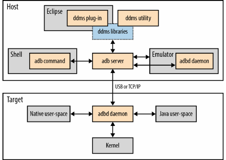
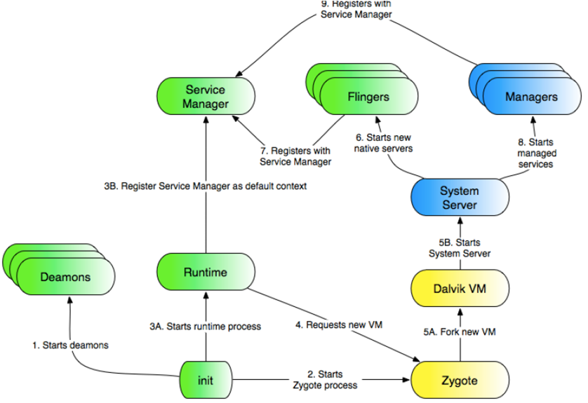
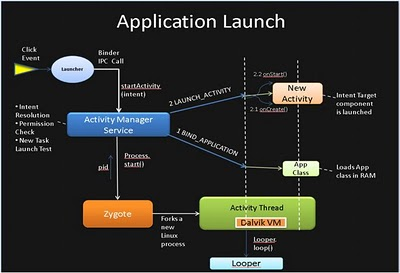

Android Internals 2
[ Back]1 Overview
- The Software Content of an Android Device
- Boot Sequence
- The Running State
- Shutdown Sequence
- Support Daemons: installd, vold, netd, rild, keystore
- Hardware Abstraction Layer
- Over The Air upgrade system
- Focussed on explaining the conceptual; for details look up in the book, etc.
1.1 Android Architecture

Figure 1: Android System Architecture [From source.android.com]
3 Android Debug Bridge (adb) Internals

Figure 2: adb Internals as Client Server (Fig 6.3 Embedded Android book)
4 Boot Sequence
- Power-On => Boot Loader => Linux Kernel => Process Init
- Boot Loader is on a boot partition
- On Linux PC: Linux kernel, e.g.,
/boot/vmlinuz-3.13.0-29-lowlatency - On Android: boot partition contains the kernel
- http://forum.xda-developers.com/wiki/Bootloader
4.1 root@mako # cat /proc/cmdline
console=ttyHSL0,115200,n8 androidboot.hardware=mako lpj=67677
user_debug=31 uart_console=enable lcd_maker_id=primary
lge.hreset=off lge.reset=mode_reset gpt=enable lge.kcal=0|0|0|x
lge.rev=rev_11 androidboot.emmc=true
androidboot.serialno=01cc270747d52fcc
androidboot.bootloader=MAKOZ30d androidboot.baseband=mdm
bootreason=reboot
5 Android Runtime

Figure 3: Android in Running State
- Chronological order: 1, 2, 3A, …
- Understand
USER PID PPID VSIZE RSS WCHAN PC NAMEcolumns- Look up the man page of
pson Linux.
- Look up the man page of
root@generic:/ # pson emulator-5554USER PID PPID VSIZE RSS WCHAN PC NAME root 1 0 640 496 c00bd520 00019fb8 S /init root 2 0 0 0 c00335a0 00000000 S kthreadd root 3 2 0 0 c001e39c 00000000 S ksoftirqd/0 root 4 2 0 0 c002f170 00000000 S kworker/0:0 root 5 2 0 0 c002f170 00000000 S kworker/u:0 root 6 2 0 0 c002e744 00000000 S khelper root 7 2 0 0 c0093bb4 00000000 S sync_supers root 8 2 0 0 c0094470 00000000 S bdi-default root 9 2 0 0 c002e744 00000000 S kblockd root 10 2 0 0 c002e744 00000000 S rpciod root 12 2 0 0 c008d790 00000000 S kswapd0 root 13 2 0 0 c00e34bc 00000000 S fsnotify_mark root 14 2 0 0 c002e744 00000000 S crypto root 25 2 0 0 c0216434 00000000 S mtdblock0 root 26 2 0 0 c0216434 00000000 S mtdblock1 root 27 2 0 0 c0216434 00000000 S mtdblock2 root 29 2 0 0 c002e744 00000000 S binder root 30 2 0 0 c002e744 00000000 S deferwq root 31 2 0 0 c002f170 00000000 S kworker/u:2 root 32 2 0 0 c0242fa8 00000000 S mmcqd/0 root 33 1 588 312 c00bd520 00019fb8 S /sbin/ueventd root 35 2 0 0 c0142db4 00000000 S jbd2/mtdblock0- root 36 2 0 0 c002e744 00000000 S ext4-dio-unwrit root 41 2 0 0 c0142db4 00000000 S jbd2/mtdblock1- root 42 2 0 0 c002e744 00000000 S ext4-dio-unwrit root 44 2 0 0 c002f170 00000000 S kworker/0:2 root 45 1 1428 140 c00e68a4 0001120c S /sbin/healthd system 46 1 1000 340 c0253e80 b6ef041c S /system/bin/servicemanager root 47 1 4660 1168 ffffffff b6f22d14 S /system/bin/vold root 49 1 9784 1284 ffffffff b6f4fd14 S /system/bin/netd root 50 1 1028 424 c0262d18 b6edf110 S /system/bin/debuggerd radio 51 1 5500 856 ffffffff b6ebdd14 S /system/bin/rild system 52 1 18876 5944 ffffffff b6ea85cc S /system/bin/surfaceflinger root 53 1 202568 39640 ffffffff b6eb0568 S zygote drm 54 1 6924 2532 ffffffff b6e5341c S /system/bin/drmserver media 55 1 21516 5384 ffffffff b6f5a41c S /system/bin/mediaserver install 56 1 988 452 c02f5e30 b6f56158 S /system/bin/installd keystore 57 1 3340 1208 c0253e80 b6ec441c S /system/bin/keystore root 58 1 920 364 c00e68a4 b6f495cc S /system/bin/qemud shell 61 1 924 468 c01eb6dc b6f60158 S /system/bin/sh root 62 1 4584 212 ffffffff 000190ac S /sbin/adbd system 372 53 268204 37504 ffffffff b6eb15cc S system_server u0_a7 424 53 223700 30244 ffffffff b6eb15cc S com.android.systemui media_rw 442 1 3508 452 ffffffff b6f46158 S /system/bin/sdcard u0_a5 447 53 215200 22320 ffffffff b6eb15cc S android.process.media u0_a29 509 53 221232 24116 ffffffff b6eb15cc S com.android.inputmethod.latin radio 523 53 233992 25212 ffffffff b6eb15cc S com.android.phone u0_a8 536 53 227260 30528 ffffffff b6eb15cc S com.android.launcher system 741 53 219940 19048 ffffffff b6eb15cc S com.android.settings u0_a4 774 53 216196 18192 ffffffff b6eb15cc S com.android.dialer u0_a1 857 53 214480 20152 ffffffff b6eb15cc S com.android.providers.calendar u0_a9 875 53 220416 20256 ffffffff b6eb15cc S com.android.mms u0_a16 901 53 221672 19820 ffffffff b6eb15cc S com.android.calendar u0_a20 922 53 215180 20356 ffffffff b6eb15cc S com.android.deskclock u0_a24 941 53 223376 22860 ffffffff b6eb15cc S com.android.email u0_a25 961 53 215452 18268 ffffffff b6eb15cc S com.android.exchange root 991 62 928 492 c0010008 b6f87fa0 S /system/bin/sh root 1013 2 0 0 c00cfa90 00000000 S flush-31:1 root 1020 991 1236 460 00000000 b6eff158 R ps- There is a volatile-abstract directory within
/procnamed after each of thepid- Explore these subdirectories further.
root@generic:/ # service listFound 75 services …
6 Binder
7 Zygote
- From a dictionary: zy·gote n. (i) The cell formed by the union of two gametes, especially a fertilized ovum before cleavage. (ii) The organism that develops from a zygote.
- Process
initstarts zygote. It is a process with pre-loaded Dalivik/ART VM. Starts listening on a socket for requests to spawn off applications. - ActivityManagerService writes commands to this socket.
- An application starts as a
forkof Zygote. - Recall that process address spaces are disjoint. But, libraries common to processes are not loaded as duplicates – instead they are shared behind the scenes in Linux virtual memory management.

Figure 4: Android's Zygote
8 Activity Manager service
- Read from Embedded Android book
9 Miscellaneous System Tools
9.1 dumpstate
- Read from Embedded Android book
10 References
- Karim Yaghmour, Embedded Android, O'Reilly Media, Inc., 2013, 412 pp; WSU Safari Books Online 9781449327958; Chapter 6: Native User-Space. Required Reading.
- http://stackoverflow.com/questions/9153166/ understanding-android- zygote- and- dalvikvm 2012 Recommended Reading
- http://forum.xda-developers.com/wiki/Bootloader Recommended Reading